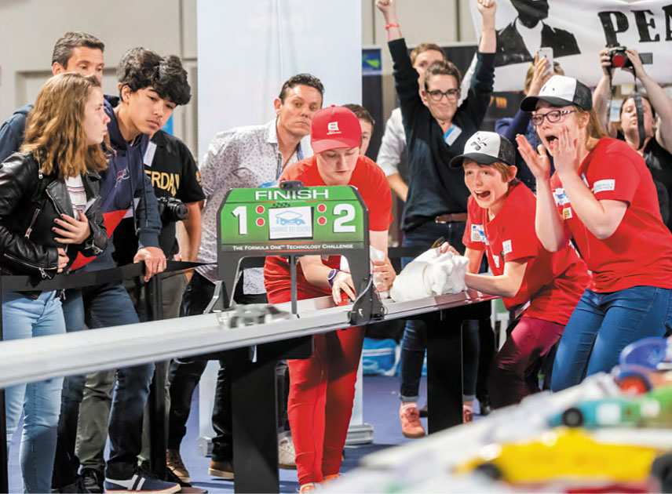
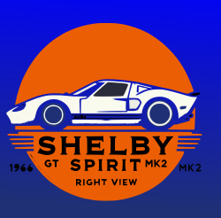
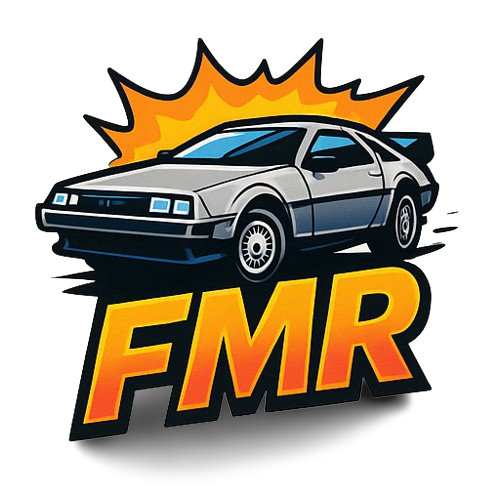

Course en cours

Le concours Course en Cours est un dispositif pédagogique original au service des enseignants et complémentaire des méthodes classiques. Mais Course en Cours est aussi basé sur un engagement et un investissement personnel important des collégiens et lycéens. Afin de renforcer la motivation et l’envie de réussir des jeunes et récompenser les meilleurs projets, l’association Course en Cours organise, en fin d’année scolaire, des compétitions aux niveaux local, régional et national.Ce concours prend en compte bien sûr les caractéristiques techniques du véhicule réalisé par les équipes mais aussi l’évaluation de l’organisation, de l’engagement des élèves et de l’esprit d’équipe. La communication et le « marketing » de leur projet sont aussi abordés.Ainsi, les collégiens et lycéens sont sensibilisés aux « savoir-être » qui leur seront indispensables dans leur future carrière professionnelle.
Règlement Course en cours
Lycée lazare de schwendi
Le Lycée Lazare de Schwendi est un établissement public situé à Ingersheim, près de Turckheim, en Alsace. Il est reconnu pour sa spécialisation dans les formations techniques et industrielles, offrant un large éventail de cursus adaptés aux besoins du secteur.
🎓 Formations proposées
- Plasturgie : Bac Pro Plasturgie et BTS Europlastics et Composites.
- Électricité et maintenance : Bac Pro MELEC (Métiers de l'Électricité et de ses Environnements Connectés), Bac Pro Maintenance des Équipements Industriels, CAP Électricien et CAP Conducteur d'Installations de Production.
- Sciences et Technologies de l'Industrie et du Développement Durable (STI2D) : Bac STI2D avec des spécialités adaptées aux évolutions technologiques.
- Formation continue :Le lycée fait partie du réseau GRETA Centre Alsace , offrant des formations pour adultes, du CAP au BTS, dans divers secteurs tels que la plasturgie, l'électricité industrielle et la maintenance industrielle.
Le lycée propose des formations allant du CAP au BTS dans les domaines suivants :
🌍 Langues et ouverture internationale
L'établissement propose des sections européennes, avec des enseignements en langues étrangères, notamment l'allemand et l'anglais. Il offre également des opportunités d'immersion internationale, notamment à travers le programme Erasmus+.📊 Résultats et réputation
En 2023, le lycée a obtenu un taux de réussite au baccalauréat de 94,7 %, avec 38,7 % de mentions. Il se distingue également par un taux de satisfaction de 98 % parmi ses élèves.🏫 Cadre et équipements
Le Lycée est situé dans un environnement calme et agréable, accessible via le réseau TRACE et le TER. Il dispose d'équipements modernes pour soutenir l'apprentissage pratique et théorique.Pour plus d'informations ou pour organiser une visite virtuelle, vous pouvez consulter leur site officiel : Lycée lazare de schwendi
Shelby Spirit

L'équipe "Shelby Spirit" comprenant Paul, Brahim, Yanis, Hugo et Nicolas ce sont inspirés de la célèbre Ford GT40 Mk II qui a participer au 24 heures du mans en 1966.
Roue Libre
L'équipe "Roue Libre" comprenant Ethan, Axel, Thibault, Samuel et Noah ce sont inspirés d'une Volswagen rétro nommé la Coccinelle, en particulier la Coccinelle nommée "Choupette" utilisé dans le film "La Coccinelle à Monte-Carlo" .
The Mystery INC
L'équipe "The Mystery INC" comprenant Alix, Nathan, Israël, Dorian et Lilian ce sont inspirés de Scooby-Doo avec la fameuse "Mystery Machine".
FMR

L'équipe "FMR" comprenant Fareed, Martin et Ruben ce sont inspirés de la DoLorean de la trilogie Retour vers le futur.